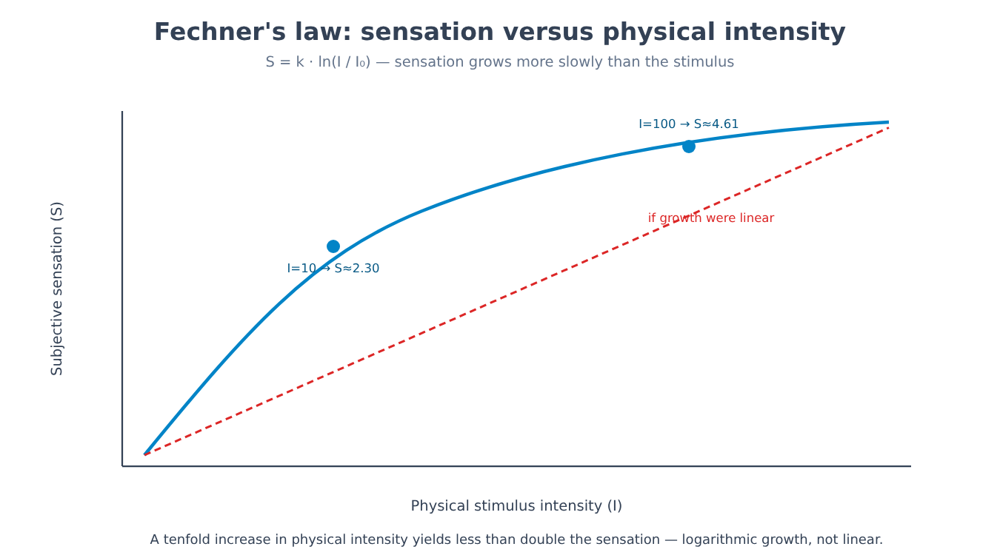
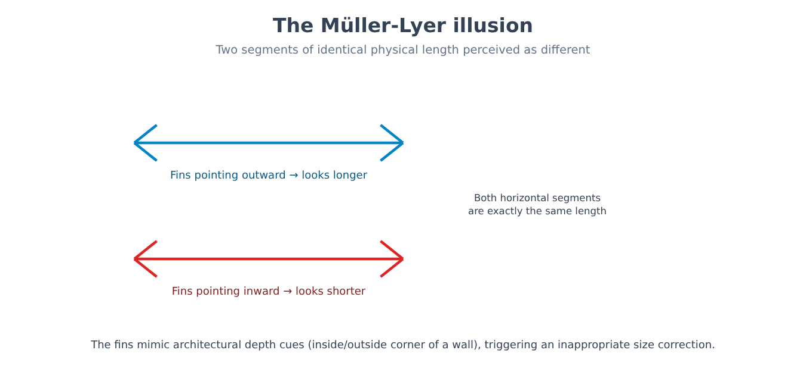
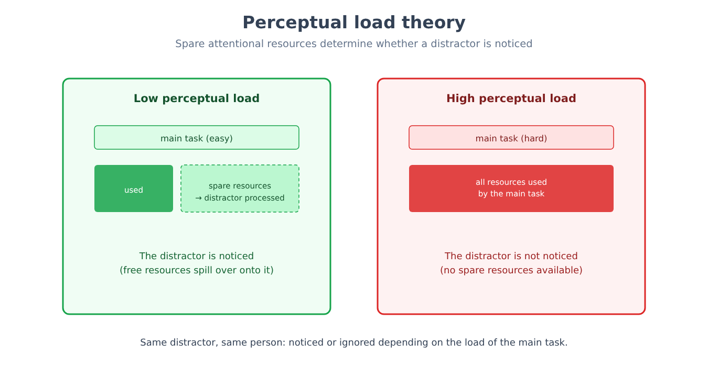
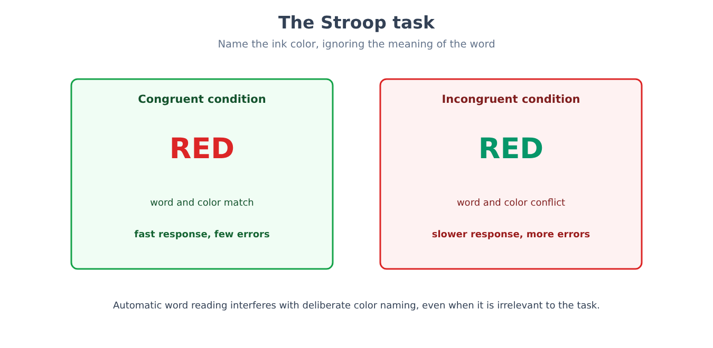
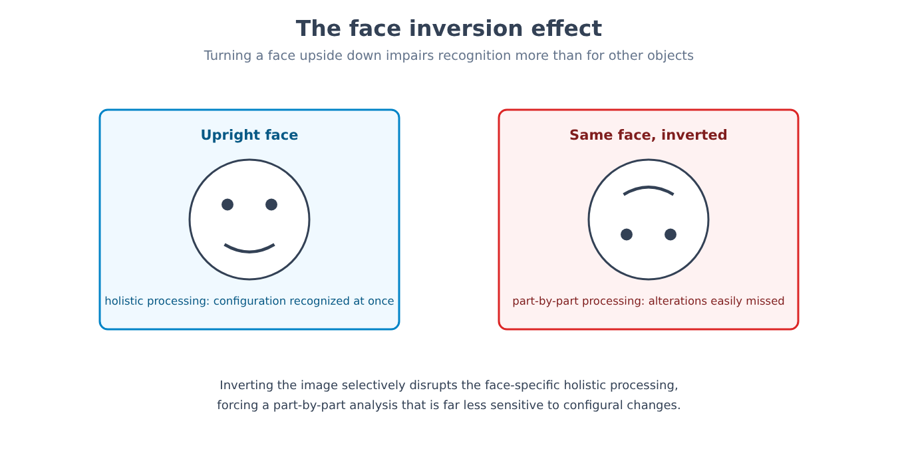
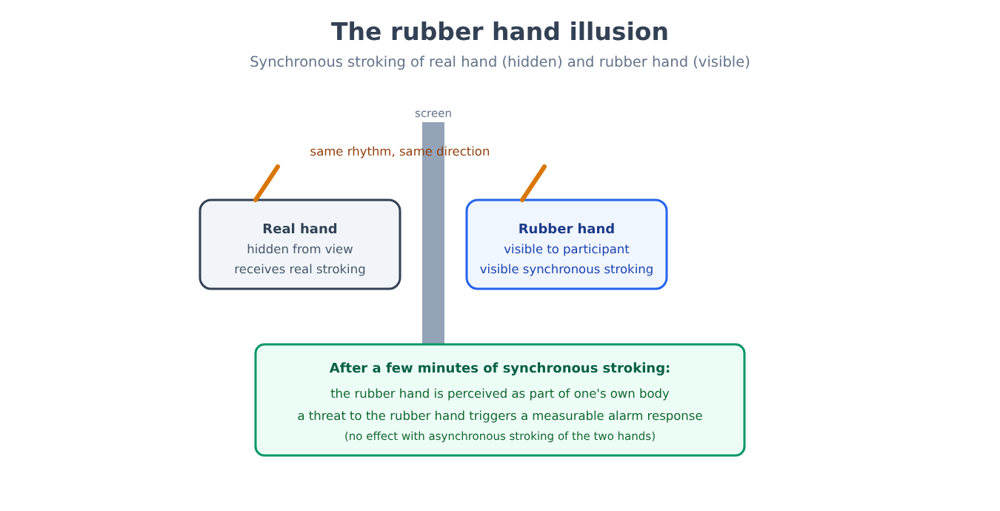

Part V. Perception and attention
Chapter 28 — From transduction to sensation
[IN A NUTSHELL]
Chapter 7 introduced psychophysics as the quantitative study of the relationship between the physical intensity of a stimulus and the intensity of the perceived sensation. This chapter sets out that relationship in full: how a threshold is measured, why the relationship between stimulus and sensation is not linear, what formula describes it, and why a sensory system stops signaling what remains constant.
The absolute threshold and the difference threshold
A sensory system does not respond to just any amount of physical energy: there is an absolute threshold, the minimum intensity of a stimulus detectable on half of the trials, below which the stimulus is present but produces no reportable sensation. A second threshold, distinct and just as central, is the difference threshold or just noticeable difference (JND): the smallest change in intensity that an observer can detect relative to a reference stimulus.
The crucial discovery, made in the mid-nineteenth century, is that the difference threshold is not a fixed quantity, expressed in absolute units (grams, decibels, candles), but a constant proportion of the starting intensity. To detect that a weight has increased, a fixed absolute increment is not what is needed: what is needed is an increment proportional to the size of the starting weight. Lifting two weights of 100 and 102 grams makes it possible to tell them apart; lifting two weights of 1000 and 1002 grams, with the same absolute increment of 2 grams, does not — because the ratio between increment and base is by then too small.
[FORMULA]
Weber's law formalizes this proportionality:
ΔI / I = k
Where:
• ΔI is the just noticeable difference, that is, the smallest detectable increment in intensity.
• I is the intensity of the reference stimulus.
• k is the Weber fraction, a constant specific to each sensory modality (not a universal value): about 0.02 for weight discrimination, about 0.08 for brightness, about 0.05 for loudness.
Worked example. With k = 0.02 (weight discrimination) and a reference weight I = 200 g, the just noticeable difference is:
ΔI = k · I = 0.02 · 200 g = 4 g
So a difference of at least 4 grams is needed to notice that a second weight is heavier than the first. But with a reference weight ten times larger, I = 2000 g, the same constant k = 0.02 requires:
ΔI = 0.02 · 2000 g = 40 g
Not 4 grams as in the previous case: the required difference has grown in proportion to the base; it has not stayed fixed. This is exactly the phenomenon the law describes.
Starting from Weber's law, the physiologist and philosopher who gave it its name derived a second relationship, this time between the physical intensity of the stimulus and the subjective intensity of the sensation across the entire perceptible range, not only at the margin of a single discrimination.
[FORMULA]
Fechner's law:
S = k · ln(I / I₀)
Where:
• S is the subjective intensity of the sensation.
• I is the physical intensity of the stimulus.
• I₀ is the intensity of the absolute threshold, the point at which the sensation begins to exist.
• k is a constant specific to the sensory modality.
• ln is the natural logarithm.
The practical consequence is that sensation grows more slowly than physical intensity: doubling the brightness of a lamp does not double perceived brightness, because the relationship is logarithmic, not linear.
Worked example. Let k = 1 and I₀ = 1 (arbitrary units, chosen only to isolate the shape of the function). A physical intensity I = 10 (ten times the threshold) corresponds to a sensation:
S = 1 · ln(10 / 1) = ln(10) ≈ 2.30
Raising the physical intensity to I = 100 — ten times more intense than before, a hundred times the threshold — the sensation becomes:
S = 1 · ln(100 / 1) = ln(100) ≈ 4.61
A tenfold increase in physical intensity (from 10 to 100) has produced an increase in sensation of exactly double (from 2.30 to 4.61, because ln 100 = 2 · ln 10), not tenfold: this is exactly the gap between physical growth and subjective effect that the formula describes. An increase that is enormous in absolute physical terms (from a light bulb to a floodlight) produces a much more modest increase in sensation than the physical increase would suggest — one of the reasons why scales such as decibels for sound or f-stops for photographic exposure are themselves logarithmic: they are built to correspond to how the perceptual system actually responds, not to how physical energy is distributed.

[THE EXPERIMENTAL DESIGN]
The problem. Measuring a threshold requires an operational criterion: "the point at which a sensation begins to exist" is not directly observable, only inferable from the behavior reported by the person experiencing it.
The method. The classical psychophysical methods, developed in the mid-nineteenth century and still the foundation of modern psychophysics, present stimuli of known intensity in increasing or decreasing order (the method of limits), or stimuli arranged in random order around the expected value of the threshold (the method of constant stimuli), systematically recording the percentage of trials on which the stimulus is detected. The absolute threshold is defined, by operational convention, as the intensity detected on 50% of trials — not 0% or 100%, because detection at a physiologically real threshold is still probabilistic, not a sharp on/off switch.
Why it matters. This approach made measurable, with reproducible numerical precision, a phenomenon — the subjective experience of a sensation — that would seem by its nature to be beyond quantitative measurement. It is the methodological model that all of experimental psychology, not only the study of perception, has inherited: making observable and numerical what is inwardly experienced, by means of a well-defined behavioral task.
Sensory Adaptation
A second phenomenon, distinct from the threshold but just as systematic, is sensory adaptation: prolonged and constant exposure to a stimulus progressively reduces the sensory system's response to that stimulus, while sensitivity to a change remains intact or even increases. Someone who walks into a dark room after being outdoors in full sunlight sees nothing for the first few minutes; visual sensitivity then increases progressively (dark adaptation) by a factor of ten thousand or more relative to the initial condition, a process that in the human eye typically takes twenty to thirty minutes to complete.
[MIND THE LEAP]
It is easy to think of adaptation as a simple "fatigue" of the sensory system, a passive giving way. It is not: adaptation is an active and functionally useful mechanism, not a defect. A sensory system that kept signaling a constant stimulus with the same intensity (the smell of one's own home, the pressure of clothes on the skin, the background hum of an appliance) would waste resources on information that no longer has any predictive value — what has stayed the same does not call for a new response. By adapting to what is constant, the system remains free to react with full sensitivity to what changes, which is almost always the information relevant to behavior.
Adaptation is not an exclusively visual phenomenon: someone who plunges into a cold swimming pool stops perceiving the cold as intolerable after a few minutes, not because the water temperature has changed, but because the thermoreceptors have reduced their response to a condition that is by now constant; in the same way, a strong smell noticed on entering a place (a kitchen, a stable, a chemistry lab) becomes less and less noticeable for whoever stays there, while remaining fully evident to someone who walks in at that moment — the difference between the two observers lies not in the sensitivity of the nose, but in their recent history of exposure to that specific stimulus.
[MINI-TIMELINE]
• Mid-nineteenth century — Weber formulates the law that bears his name on the basis of experiments on weight discrimination.
• 1860 — Fechner publishes Elemente der Psychophysik, generalizing Weber's law into a relationship between physical stimulus and subjective sensation, and thereby founding psychophysics as a quantitative research program — the historical antecedent introduced in chapter 7.
• 1950s-1960s — signal detection theory refines the classical psychophysical method by separating an observer's true sensitivity from their response criterion (how willing they are to risk a false alarm rather than miss a weak signal) — a distinction that nineteenth-century methods could not isolate.
• Today — the classical psychophysical methods remain the basic tool for calibrating experimental stimuli throughout research on perception and attention, including the experimental techniques of the later chapters of this part.
[KEY POINT OF THE CHAPTER]
• The absolute threshold is the minimum intensity detectable on 50% of trials; the difference threshold (JND) is the smallest change detectable relative to a reference stimulus.
• Weber's law (ΔI/I = k) shows that the difference threshold is proportional, not absolute: the same physical difference may or may not be detectable depending on the starting base.
• Fechner's law (S = k · ln(I/I₀)) describes a growth of sensation that is slower than that of the physical stimulus, logarithmic in form.
• Sensory adaptation is not a failure of the system, but a mechanism that frees resources to respond to change, ignoring what has remained constant.
Chapter 29 — Perception as inference
[IN A NUTSHELL]
The retina receives a two-dimensional, ambiguous and incomplete image; what is perceived is a three-dimensional world, stable and full of recognizable objects. This chapter explains why perception should be understood as an active process of inference from incomplete data, not as a passive recording of the world — and why optical illusions, far from being defects, are the most direct evidence of this mechanism.
Unconscious Inference
The image projected onto the retina is, from a purely geometric point of view, radically underdetermined with respect to the real scene: the same two-dimensional retinal image can in principle correspond to infinitely many different three-dimensional scenes (a small, nearby object projects the same image as a large, distant one). The perceptual system resolves this ambiguity not by passively recording the image, but by applying to it, quickly and without awareness, statistical assumptions about how the world is typically made — a process described as early as the mid-nineteenth century as unconscious inference.
[MIND THE LEAP]
The term "unconscious" here has nothing to do with the dynamic unconscious described in chapter 8: these are not contents repressed because they are psychologically unacceptable, but perceptual computations that simply remain beyond the reach of introspection, for the same reason one is not aware of the computation that allows one to keep one's balance while walking. Chapter 31 will return to this distinction explicitly, comparing the two uses of the term "unconscious" that psychology has inherited from very different traditions.
Perceptual Constancies
The practical result of this inferential process is the perceptual constancies: the ability to perceive a property of an object as stable even though the retinal image that object projects changes continually. Size constancy makes it possible to perceive a person walking away as staying the same height, even though their retinal image progressively shrinks — the perceptual system automatically compensates for the estimated distance. Color constancy makes it possible to perceive a white sheet of paper as white both under the warm light of an incandescent lamp and under the cool light of an overcast sky, even though the spectral composition of the light actually reaching the eye is very different in the two cases: the visual system estimates and subtracts the color of the light source, not only the color reflected by the object.
Illusions as windows on the mechanism
If perception is inference, an optical illusion is not a random error of the visual system, but the product of the same inferential rules that, in the great majority of real cases, produce a correct perception — applied to a situation built on purpose so that those rules, this time, lead astray.
[THE EXPERIMENTAL DESIGN]
The phenomenon. In the checker shadow illusion, two squares of a checkerboard, physically identical in the amount of light they reflect (measurable with a photometer), are perceived as clearly different shades of gray — one light, one dark — when one of the two lies in the shadow cast by a cylinder in the scene.
The interpretation. The visual system does not report the absolute physical luminance of a surface, but estimates how much light that surface would be reflecting if it were not in shadow, applying an automatic correction for the estimated illumination of the scene — exactly the same principle as color constancy, applied to lightness instead of color. The square "in shadow" is perceived as lighter than its physical luminance indicates, because the system treats it as a light surface dimly lit, not as a dark gray surface normally lit.
Why it matters. Neither of the two perceptions is an "error" in the ordinary sense of the word: the visual system is correctly applying the same statistical rule that in the real world — full of cast shadows — almost always produces the right estimate of an object's real surface. The illusion emerges only because the stimulus was built to artificially isolate the case in which that rule, sensible in itself, leads to a conclusion different from direct physical measurement.
[NUMBERS]
A second example of an illusion, just as classic, bears directly on the size constancy just described. In the Müller-Lyer illusion, two segments of identical physical length — measurable with a ruler, both for example 5 cm — are perceived as having different lengths depending on the arrowheads placed at their ends: the segment with the arrowheads pointing outward (shaped like a swallowtail) is typically perceived as longer, by up to about 20% in many Western samples, than the identical segment with the arrowheads pointing inward. An influential but contested interpretation (the illusion also appears in people blind from birth and varies widely across populations) links the effect precisely to size constancy: outward-pointing arrowheads resemble the edge of a wall seen from an inside corner (like the corner of a room), inward-pointing ones the outside edge of a building — two depth cues that, in ordinary visual experience in human-built environments, are systematically associated with different distances from the observer, leading the visual system to apply, even in this two-dimensional case lacking any real depth, the same size correction it would apply to a real three-dimensional scene.

Perceptual organization and predictive coding
Even before recognizing a specific object, the visual system must solve a more elementary problem: which portions of the retinal image belong to the same object, and which to different objects. The principles of perceptual organization identified in the early twentieth century by the Gestalt school — grouping by proximity, by similarity, by continuity of contour, and the distinction between figure (what appears as an object, in the foreground) and ground — remain descriptively accurate today, even though the contemporary debate regards them not as independent primitive principles, but as observable consequences of a more general inferential process based on statistical regularities of the visual world (the edges of a single object tend, in the real world, to be continuous, close together and similar in texture).
The contemporary theoretical framework that generalizes this idea is predictive coding: the brain would not process sensory information from scratch at every instant, but would continuously maintain a predictive model of what it expects to perceive, comparing it with the incoming sensory input and propagating upward, for further processing, only the discrepancy between prediction and reality (the prediction error, the same concept already encountered in chapter 22 in connection with dopamine, applied here not to reward but to perception itself). A predictable visual world — a familiar, motionless room — therefore requires, according to this model, relatively little active processing, because the prediction matches the input almost perfectly; an unexpected change generates a large prediction error, and it is precisely this signal that captures subsequent processing and, often, attention — the topic of the next chapter.
[KEY POINT OF THE CHAPTER]
• Perception is a process of active inference from an ambiguous retinal image, not a passive recording of the world — a principle called unconscious inference, unrelated to the psychoanalytic unconscious.
• The perceptual constancies (size, color) show the perceptual system actively compensating for variables such as distance and illumination in order to report stable properties of the object.
• Optical illusions are not random errors, but the product of the same inferential rules that normally produce correct perceptions, applied to stimuli built on purpose to isolate them.
• Predictive coding proposes that the perceptual system continuously compares prediction and sensory input, propagating above all the prediction error — linking perception to the same computational principle encountered in connection with dopamine.
Chapter 30 — Attention
[IN A NUTSHELL]
At every instant, the amount of available sensory information vastly exceeds what can be processed in detail. This chapter explains how the cognitive system selects what to process, where this selection is located along the processing stream, and how efficient selection can produce a surprising blindness to whatever lies outside the focus of attention.
The Problem of Selection
Selective attention is the mechanism that favors a subset of the available sensory information for deeper processing, at the expense of the rest. The most cited case is the so-called cocktail party effect: in a crowded, noisy room, it is possible to follow a single conversation while ignoring the other surrounding voices, yet one's own name spoken in an ignored conversation captures attention in a substantial minority of cases (in Moray's classic work, about one in three; more often in people with low working memory capacity) — a sign that unselected information is not entirely lost, but is processed at a level sufficient to recognize relevant content, even without reaching full awareness.
[CONTROVERSIAL QUESTION]
Where exactly along the processing pathway does selection take place? The first models proposed an early selection filter: unattended information would be blocked almost immediately, before even being analyzed for meaning — an explanation consistent with the idea that following a single conversation requires discarding the rest immediately. But the fact that one's own name captures attention even in an ignored channel is hard to reconcile with such an early block: if the unselected channel were actually blocked before the analysis of meaning, a name spoken there should never be recognizable. Later models propose instead attenuation rather than a sharp block: unselected information is processed, but with a weakened signal, sufficient to recognize content of high personal relevance (one's own name, a warning word) but not to follow its full meaning. The debate remains open as to how deeply — down to what level of semantic analysis — ignored information is actually processed before being discarded, and the answer seems to depend in part on how demanding the main task is, the topic of the following section.
Attentional Load
An influential explanation of this apparent contradiction is perceptual load theory: when the main task imposes a high processing load (searching for a specific object among many similar ones, for example), the available attentional resources are exhausted before reaching the irrelevant stimuli, which therefore actually remain unprocessed; when the main task is simple and leaves resources available, those "surplus" resources automatically spill over onto the surrounding stimuli, even when the instruction is to ignore them. The same person, with the same distracting stimulus, may therefore notice it or not depending on how demanding the task they are performing at that moment is — not because of a difference in will or discipline, but because of a difference in residual processing resources.

Inattentional blindness and change blindness
The practical consequences of stringent attentional selection can be as surprising as they are counterintuitive.
[THE EXPERIMENTAL DESIGN]
The design. A group of observers is asked to watch a short video in which two teams, one in white shirts and one in black shirts, pass a basketball to each other, and to count aloud how many passes the white team makes — a task that requires sustained, selective attention to the players in white while ignoring those in black. Halfway through the video, a person in a gorilla costume walks slowly across the scene, stops in the middle of the frame, thumps their chest, and moves on — visible for several seconds in a video lasting just over a minute.
The result. About half of the observers, busy counting, do not report having seen the gorilla when questioned right after viewing — and are surprised, often markedly so, when they watch the video a second time without the counting task.
Why it matters. The phenomenon, called inattentional blindness, shows that visual awareness of a stimulus — even a salient, unusual stimulus displayed for several seconds at the center of the visual field — is not guaranteed by the mere physical presence of the stimulus on the retina: it requires that attention actually be directed toward it. A task that fully absorbs the available attentional resources (counting passes among the players in white, actively excluding those in black) can leave entirely "invisible," in the subjective sense of the word, a stimulus that is perfectly visible from an optical point of view.
A complementary phenomenon, change blindness, shows that even a direct comparison between two versions of the same scene, alternated with a brief visual interruption between one and the other, can leave a substantial change unnoticed (an object disappearing, a color changing, a person being replaced) if that change does not fall at the exact point to which attention is directed at that moment — further evidence that the visual representation maintained from moment to moment is much more selective and less detailed than subjective experience, which seems to provide a complete and continuous visual picture, would lead one to believe.
[MIND THE LEAP]
It is easy to conclude from these experiments that visual perception is, in general, "poor" or unreliable. The more precise conclusion is different: the visual system builds, moment by moment, a detailed representation only of what is at the center of attention, keeping a more summary representation of the rest of the scene — sufficient, in most everyday situations, to find one's way around without the sudden change of something irrelevant posing a practical problem. The cost of this efficient strategy emerges only under experimental conditions built on purpose to expose it, or in analogous real situations (an absorbing visual task while driving, for example) in which the stakes of what escapes attention can be far more serious than an unnoticed gorilla in a video.
[COMMON BELIEF]
The idea of being able to "do several things at once efficiently" — reading messages while following a meeting, watching a video while studying — is extremely widespread, particularly among people who describe themselves as used to doing it regularly. The available experimental evidence points in the opposite direction for the great majority of tasks that require active cognitive processing (not just motor processing): what is commonly called "multitasking" is almost always, from the point of view of attention, a rapid sequential alternation between one task and the other, not simultaneous processing — with a measurable cost at every task switch (the time and accuracy lost in reorienting attention), which adds up in the total time taken and in the errors made, compared with completing the same tasks in pure sequence. Studies comparing people who describe themselves as habitual "media multitaskers" with people who rarely do it also show, surprisingly, that the former in one influential study (Ophir and colleagues, 2009) tended to perform worse, not better, on laboratory tasks that require ignoring irrelevant information — consistent with the idea that a frequent habit of task switching does not train a capacity for parallel processing (which the human attentional system does not possess for complex tasks), but rather makes less efficient the filter that normally shuts out distractions.
What exactly determines whether a content enters conscious awareness or not is a question that goes beyond the bounds of this chapter: chapter 78 (Part XIII) will return to it directly, using the conceptual tools introduced here — attention, load, selection — as the basis for an even broader question about what distinguishes conscious processing from processing that remains, by definition, outside awareness: the topic of the next chapter.
[KEY POINT OF THE CHAPTER]
• Selective attention makes it possible to process in detail only a subset of the available sensory information; the rest is processed more superficially, not necessarily wiped out (cocktail party effect).
• Perceptual load theory explains why the same distracting stimulus is noticed or ignored depending on how many attentional resources the main task leaves available.
• Inattentional blindness (the gorilla experiment) and change blindness show that visual awareness of a stimulus requires directed attention, not just its physical presence on the retina.
• What distinguishes content processed without awareness from content that reaches full conscious awareness will be taken up directly in chapter 78.
Chapter 31 — Nonconscious processes
[IN A NUTSHELL]
A large part of information processing takes place without the person being aware of it. This chapter carefully distinguishes what this statement can legitimately claim from what popular communication has made it claim: semantic priming is a robust, well-replicated phenomenon, large-scale behavioral priming has largely crumbled under the scrutiny of replications, and the comparison with the psychoanalytic unconscious of chapter 8 requires an explicit distinction, not an implicit equivalence.
Priming: two phenomena with very different Fates
Priming is the phenomenon whereby exposure to a stimulus influences, measurably but often without awareness on the part of the person experiencing it, the response to a subsequent stimulus. Under this common label, however, coexist phenomena with very different levels of empirical solidity.
Semantic priming — the observation that the word "nurse," seen or heard immediately before, speeds up recognition of the related word "doctor" compared with an unrelated word — is among the most replicated results in all of cognitive psychology: it reflects the automatic activation of semantically connected representations within a conceptual network, a mechanism that also underlies applied phenomena such as automatic text completion.
Behavioral priming (or "social" priming) makes a much more ambitious claim: that exposure to abstract concepts can modify complex motor behaviors, not just response times on a linguistic task. The historically most cited example is the observation that participants exposed to words associated with old age (elderly, wrinkles, Florida — the American state associated with retirees) afterward walked more slowly toward the laboratory exit than participants exposed to neutral words.
[DOES IT STILL HOLD?]
Behavioral priming of walking speed remains one of the most cited examples in popular psychology handbooks, but its current empirical status is very different from its fame. The original study, published in the mid-1990s, reported a very large effect size on small samples (about thirty participants per experiment, around fifteen per condition). A direct replication attempt (Doyen and colleagues, 2012), with a larger sample and with infrared sensors in place of a hand-held stopwatch, did not reproduce the effect, which appeared only when the experimenter expected to see it. Meta-analyses of behavioral priming in general, corrected for publication bias, estimate effects much smaller than the original one, and close to zero in preregistered studies — in which the experimental design, the statistical analysis and the predictions are declared publicly before data collection, to rule out the possibility of tailoring the analysis to the result obtained. The field of large-scale behavioral priming is today regarded as largely unreplicated: many results published as confirmations were weak effects, read as support for the theory even when replications did not reproduce them.
[COMMON BELIEF]
A related idea, even more widespread in popular culture, is that messages hidden below the threshold of conscious perception — a single frame in a film, a phrase recorded backward in a music track — can induce specific, complex behaviors, such as buying a product or adopting an attitude. Subliminal processing is a real phenomenon within well-defined, narrow limits: a stimulus presented for a fraction of a second, too brief to be consciously identified, can produce measurable but modest and very short-lived effects on an immediately following task — for example slightly speeding up recognition of a related word, following the same logic as semantic priming. There is, by contrast, no solid evidence that a subliminal stimulus can induce complex, lasting behavioral decisions or decisions contrary to a preexisting motivation — the idea of subliminal advertising capable of persuading consumers against their will remains, on the current state of the evidence, a myth of journalistic origin rather than a supported scientific discovery.
Automaticity
A third phenomenon, distinct both from priming and from subliminal processing, is automaticity: the execution of a learned cognitive process so efficiently that it no longer requires controlled attention, often to the point of being hard to inhibit voluntarily even when it interferes with the task at hand.
[THE EXPERIMENTAL DESIGN]
The task. In the Stroop task, participants are shown a series of words that are names of colors (for example "red," "green," "blue"), each printed in an ink color that may or may not match the meaning of the word (the word "red" printed in green ink), with the instruction to name the ink color as quickly as possible, ignoring the meaning of the word.
The result. Response time increases systematically, and errors become more frequent, when the word and the ink color are incongruent compared with when they match — even though the task explicitly requires ignoring the meaning of the word.
Why it matters. Reading a familiar word has become, with years of practice, a process so automatized that it is activated involuntarily even when it is irrelevant and counterproductive for the assigned task, interfering with a process — naming a color — that instead requires controlled attention. The Stroop task remains today a standard experimental tool for measuring the efficiency of inhibitory control, that is, the ability to suppress a prepotent automatic response in favor of a less automatic response that the context calls for.

Two Unconsciouses, Not One
[CONTROVERSIAL QUESTION]
Chapter 8 set out the psychoanalytic hypothesis of the unconscious: a reservoir of contents actively kept out of awareness because they are psychologically unacceptable, which nonetheless continue to influence thought and behavior and can, in principle, be brought back to consciousness through interpretive work. The cognitive unconscious described in this chapter is a conceptually different entity on at least three points. First, the mechanism: not contents repressed for motivational reasons, but processes (perceptual, recognition, semantic activation) that are by their very constitution too fast or too peripheral for introspection, regardless of any emotional content. Second, accessibility: a repressed content is, by psychoanalytic hypothesis, recoverable through interpretation; an automatic process such as semantic activation in the Stroop task never becomes, not even in principle, a fully introspectable content — it is a processing mechanism, not a hidden thought. Third, the empirical basis: the cognitive unconscious is documented by controlled, quantifiable and widely replicated experimental paradigms (semantic priming, the Stroop effect); the dynamic unconscious rests mainly on a clinical interpretive method, with a much more limited base of direct experimental replication. The two uses of the term "unconscious" share only the general idea that not all mental activity is conscious — an idea that neither tradition invented exclusively — but they describe phenomena, mechanisms and evidence that otherwise do not overlap, and it is a conceptual error to treat them as the same discovery expressed in different words.
[KEY POINT OF THE CHAPTER]
• Semantic priming is a robust and widely replicated phenomenon; large-scale behavioral priming (such as the effect on walking speed) has not withstood the scrutiny of preregistered replications, and is today regarded as largely unconfirmed.
• Subliminal processing produces real but modest and short-lived effects on immediately following tasks; there is no solid evidence supporting complex subliminal persuasion (subliminal advertising).
• Automaticity, illustrated by the Stroop task, shows how a learned process (reading) can be activated involuntarily even when it interferes with the assigned task.
• The cognitive unconscious (priming, automaticity) and the psychoanalytic unconscious of chapter 8 are conceptually distinct entities in mechanism, accessibility and empirical basis: they share only the general idea that not everything is conscious, not the specific discovery.
Chapter 32 — Object and face recognition
[IN A NUTSHELL]
Recognizing an object or a face seems instantaneous and effortless, but it requires solving a nontrivial computational problem: assigning the same identity to retinal projections that are very different from one another (different angles, distances, lighting conditions). This chapter explains how the visual system tackles this problem, with particular attention to the case of faces, where the evidence of specialization is strongest but the debate about its origin remains open.
From point to object
Recognizing an object requires integrating elementary features — edges, orientations, colors, textures, processed separately in the early stages of the visual pathway — into a unified representation that makes it possible to assign that set of features an identity and a category. This process of integration is not automatically guaranteed: under experimental conditions that overload visual attention, it is possible to induce illusory conjunctions — the erroneous perception of a feature (for example a color) as belonging to an object other than the one it actually belongs to, when attention is not available to bind the features together correctly. This result helped establish that attention serves not only to select what to process (the topic of chapter 30), but also, at a more elementary level, to bind together separately processed features into a single coherent object.
The Case of Faces
The recognition of human faces shows characteristics that distinguish it, empirically, from the recognition of other objects. A region of the temporal cortex, commonly referred to as the fusiform face area (FFA), responds disproportionately more strongly to images of faces than to images of other equally complex objects, consistently across different studies. Face recognition also shows marked holistic processing: a face is processed as a unitary configuration of features, not as a sum of independent parts (eyes, nose, mouth) evaluated separately.
[THE EXPERIMENTAL DESIGN]
The phenomenon. Turning an image of a face upside down impairs recognition and the ability to notice alterations disproportionately more than turning upside down an image of another equally familiar complex object (a house, a car). An extreme demonstration case shows two inverted face halves, each with the mouth and eyes grotesquely altered relative to the original, which appear relatively undistorted as long as the image stays upside down, whereas the same alteration becomes immediately and markedly evident as soon as the image is turned right side up.
The interpretation. The inverted face selectively disrupts the holistic processing specific to faces, forcing the visual system into processing more like that reserved for any ordinary object, analyzed part by part; the holistic processing of upright faces, by contrast, is so sensitive to the overall configuration of features (the relative distance between eyes, nose and mouth, not just the shape of each isolated feature) that it makes immediately visible an alteration that, processed part by part, would be much less evident.
Why it matters. The face inversion effect is today one of the most solid pieces of experimental evidence supporting the idea that face recognition involves processing that is qualitatively different, not merely quantitatively better trained, compared with the recognition of other objects.

A dedicated module or intensive experience?
[CONTROVERSIAL QUESTION]
Why does face recognition show these distinctive characteristics? One position holds that the human visual system has a dedicated module, largely innate or at least predisposed to develop specifically for processing faces, because of the crucial evolutionary importance of facial recognition in the social life of the species — in support of this position, newborns preferentially orient their gaze toward face-like patterns within the first hours of life, before any significant learning. An alternative position holds instead that the distinctive characteristics of face recognition reflect not a dedicated module but acquired perceptual expertise: faces are, for everyone, the most practiced and most socially relevant category of visual stimuli across the entire lifespan, and similar intensive holistic processing emerges experimentally for other categories of stimuli in which a person develops comparable visual expertise (for example bird configurations in expert ornithologists, or cars in expert enthusiasts). The case hardest to reconcile with the acquired-expertise explanation alone is congenital prosopagnosia: a selective and lasting deficit in face recognition, present from birth in people otherwise endowed with normal intelligence and visual ability, without any identifiable brain lesion — a finding that indicates at least a specific developmental component, but does not by itself settle whether that component is a dedicated module or a predisposition that still requires, in order to develop fully, the ordinary intensive experience with faces that most people acquire in early childhood.
The opposite and better-known case, acquired prosopagnosia, typically follows damage to the region of the temporal cortex associated with face recognition, caused by a stroke or trauma, in a person who until then recognized faces normally: those affected can correctly describe the individual features of a familiar face (eye color, shape of the nose) without being able to assign an identity to that combination, while often recognizing the same person by voice, gait or other nonvisual cues — a dissociation between visual face recognition and the other recognition and memory abilities, which remain intact; it becomes a double dissociation (the concept from chapter 24) if one also considers the patient with object agnosia and preserved face recognition.
[KEY POINT OF THE CHAPTER]
• Object recognition requires integrating separately processed features (edges, colors, orientations) into a unified representation, a binding that requires attention, as illusory conjunctions show.
• Face recognition shows distinctive holistic processing, illustrated by the face inversion effect: turning a face upside down impairs recognition more than turning another complex object upside down impairs its recognition.
• The debate between a dedicated module and acquired perceptual expertise as the explanation for this specialization remains open; congenital prosopagnosia indicates a specific developmental component without settling the question on its own.
• Acquired prosopagnosia, with visual face recognition selectively impaired while other recognition routes remain intact, is a further double dissociation supporting a real functional specialization.
Chapter 33 — Body, space, time
[IN A NUTSHELL]
Besides the perception of the external world, there is a perception, often overlooked because it is rarely in the foreground of conscious experience, of one's own body, of one's own capacity to act on it and on the world, and of the passage of time. This chapter explains how these three aspects — body, agency, time — are actively constructed by the nervous system, and how surprisingly manipulable they prove to be under specific experimental conditions.
Proprioception and the sense of one's own body
Proprioception is the sense of the position and movement of the parts of one's own body, based on receptors located in muscles, tendons and joints, integrated with information from the vestibular system about balance and head orientation. It is a sense rarely noticed precisely because it works continuously and reliably: its importance becomes evident above all when it fails, as in the rare clinical cases of near-total loss of proprioception, in which moving and even standing upright require constant, effortful visual supervision, otherwise provided automatically and effortlessly by the proprioceptive sense.
[THE EXPERIMENTAL DESIGN]
The design. A participant seated at a table has the view of their own real hand hidden behind a screen, while a visible rubber hand is positioned in roughly the same configuration as the real hand. The experimenter synchronously strokes, with two identical paintbrushes, both the visible rubber hand and the hidden real hand, for a few minutes.
The result. Most participants begin to report the sensation that the strokes come from the rubber hand, and — even more markedly — to perceive the rubber hand as if it were, in a sense, part of their own body. If at that moment the rubber hand is threatened (for example with a sudden blow), a measurable physiological alarm reaction is often observed, as if the threat concerned their own real body.
Why it matters. The rubber hand illusion shows that the sense of "ownership" of a body part — taking for granted that a hand is "one's own hand" — is not a fixed, automatic given, but the product of continuously updated multisensory integration (vision, touch, proprioception), which can be experimentally induced to include, within certain limits, an object external to the real body, simply by providing sufficiently convincing synchronized visual and tactile information.

More elaborate variants of the same paradigm, which replace the rubber hand alone with a whole body seen through a headset, in the first person, as if observed from outside (for example from cameras placed behind the person, with synchronized strokes applied to the real body and visible on the observed body), can induce a full-body illusion: the sensation of "being" located at the position of the externally observed body, not in one's own real physical body — a result that has helped steer contemporary research on bodily consciousness toward the idea that even the most elementary sense, that of "being here, in this body," is an active construction and in principle modifiable, not an unchangeable starting point.
The Sense of Agency
Distinct from the sense of body ownership is the sense of agency: the subjective feeling of being the causal author of an action and its consequences, distinct from the mere perception that a movement has occurred. This feeling is not a direct and infallible given, but it too is the product of an inference — typically based on the temporal coherence between the intention to act and the observed consequence of the action — and is therefore also experimentally manipulable: by introducing an artificial delay, not consciously perceptible but sufficient to interfere with the inference, between a voluntary movement and its observable effect (for example a movement of the mouse and the corresponding movement of the cursor on the screen), the subjective sense of having caused that effect weakens measurably, even when the effect was really caused by the person's movement. The topic of the sense of agency, and of how far its neural basis temporally precedes the subjective feeling of "having decided" to act, will be taken up directly in chapter 80 (Part XIII), in connection with the debate on free will.
The subjective perception of time
Time, unlike space or color, has no dedicated sense organ: there is no "eye for time" that transduces it directly. The perception of the duration of an interval is instead reconstructed indirectly, and is systematically distorted by various factors independent of the real physical duration. An interval filled with numerous and varied events (a trip to a new city) is typically remembered, retrospectively, as longer than an interval of the same physical duration but lacking memorable events (a monotonous wait) — whereas, paradoxically, the subjective experience lived in the moment itself often follows the opposite pattern: a monotonous wait seems to last longer while it is being lived, but leaves fewer memory traces to reconstruct afterward, and therefore turns out shorter in memory. This distinction between duration perceived in the moment and duration reconstructed in retrospect — an anticipation of the distinction between an experiencing self that lives experience moment by moment and a remembering self that recalls experience as a whole, which chapter 46 will take up systematically in connection with happiness and decision making — shows that "how much time has passed" is never a single objective measure passively reported, but the product of at least two distinct estimation processes, which can diverge markedly for the same physical interval.
[KEY POINT OF THE CHAPTER]
• Proprioception provides a continuous and largely unconscious sense of the position of one's own body, whose importance emerges clearly only in the rare cases in which it fails.
• The rubber hand illusion shows that the sense of body ownership is the product of updatable multisensory integration, not a fixed given — it can be experimentally extended to an object external to the body.
• The sense of agency is an inference based on the temporal coherence between intention and observed effect, manipulable by introducing artificial delays — a topic taken up in chapter 80 in connection with free will.
• The perception of duration follows at least two distinct and often diverging processes: duration lived in the moment and duration reconstructed in retrospect, an anticipation of the distinction between the experiencing self and the remembering self in chapter 46.